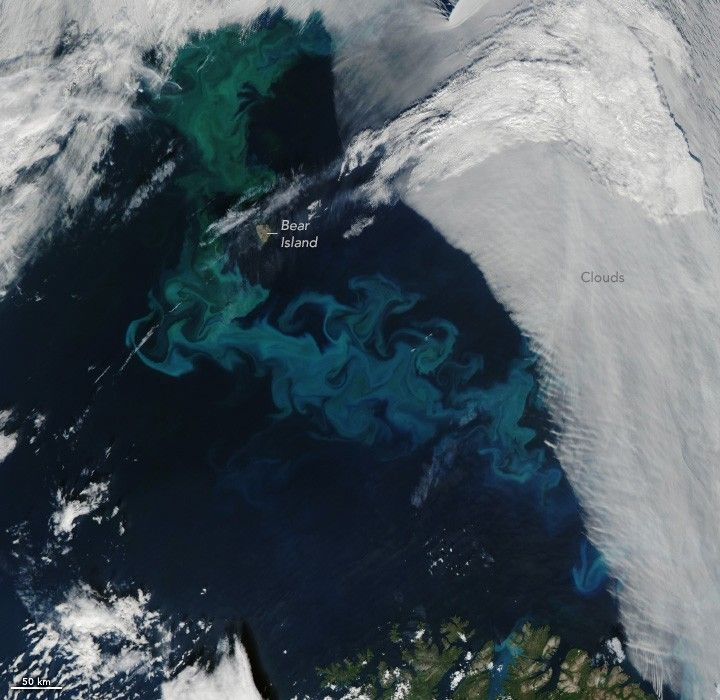

New Timing for Stubble Burning in India
Tiny plant-like organisms known as phytoplankton exploded in numbers in summer 2025, forming a colorful “bloom” near the surface of the western Barents Sea and surrounding Arctic waters.
The bloom is visible in this image, captured on August 5, 2025, by the MODIS (Moderate Resolution Imaging Spectroradiometer) on NASA’s Aqua satellite. The bloom swirled around Bear Island, an outer island of Norway’s Svalbard archipelago. The island lies about midway between the archipelago’s largest island, Spitsbergen (north of this scene), and mainland Norway, visible at the bottom of the image.
The Barents Sea typically experiences two main phytoplankton bloom seasons each year. Diatoms bloom first in May and June, followed by coccolithophores in August as nutrients get used up and the water becomes warmer and more layered.
The milky turquoise-blue color likely comes from coccolithophores, notably Gephyrocapsa huxleyi (previously called Emiliania huxleyi). These microscopic organisms are armored with plates of highly reflective calcium carbonate, imparting the distinctive color to the water. Floating sediment and other types of phytoplankton may be responsible for some of the other colors. Diatoms, for example, can make the water appear green.
Coccolithophores and other types of phytoplankton are a primary food source for small zooplankton and fish, making them an essential part of the marine food web in a sea that has commercially important fish stocks. They are also critical to the global carbon cycle and key producers of the planet’s oxygen.
Researchers have found that the inflow of water from North Atlantic surface currents can shape the location and extent of G. huxleyi blooms in this area. They are continuing to study how the so-called “Atlantification” of Arctic waters could potentially affect the area’s marine food web and biogeochemical cycles.